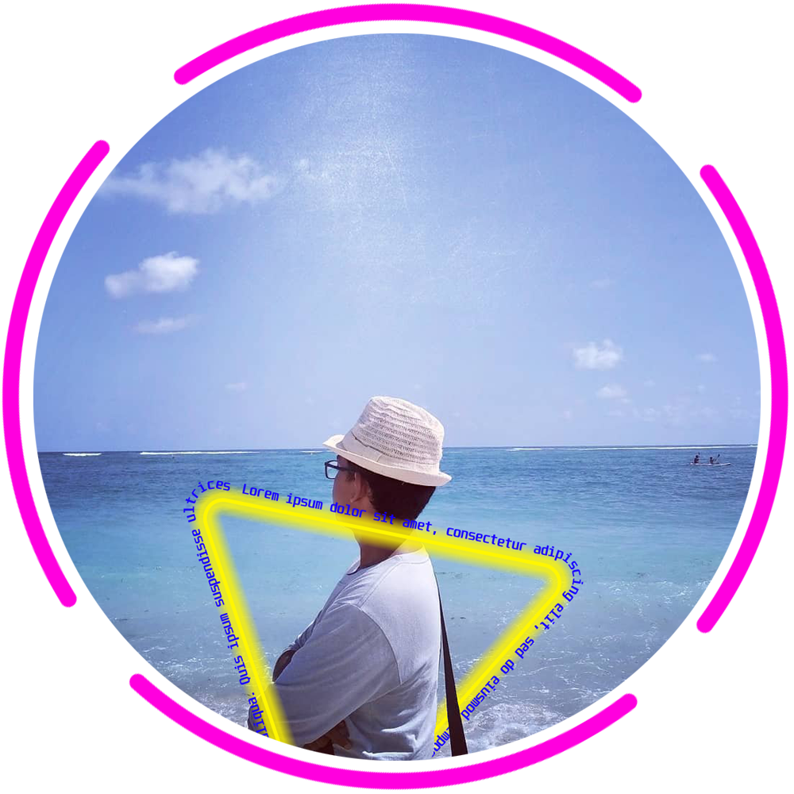

Farhan Dwi Oktavian
Haloo, Nama saya Farhan Dwi Oktavian, saya lahir di Bogor pada tanggal 04 Oktober di Tahun 2002, Saya tertarik dengan dunia Teknologi Informasi dan Komunikasi saat saya duduk di bangku SMP, saat itu saya belajar merakit sebuah PC dan belajar logika sederhana di Microsoft Excell. Saat ini saya duduk di bangku kelas 12 SMA Negeri 1 Cibinong dan sedang belajar bahasa pemrograman seperti Python, JavaScript dan sedikit bereksperimen dengan Arduino. Saya berniat melanjutkan studi saya ke tingkat yang lebih Tinggi dan mengambil Jurusan Teknik Informatika